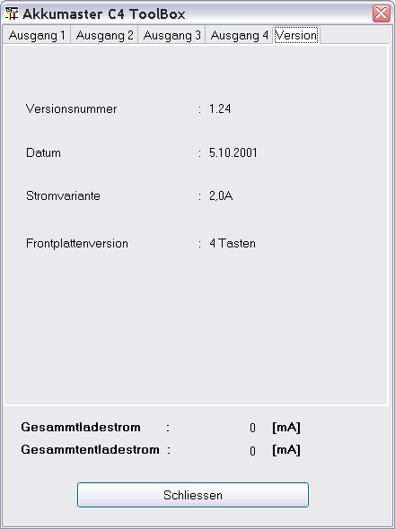
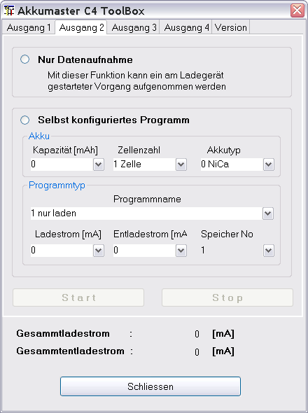
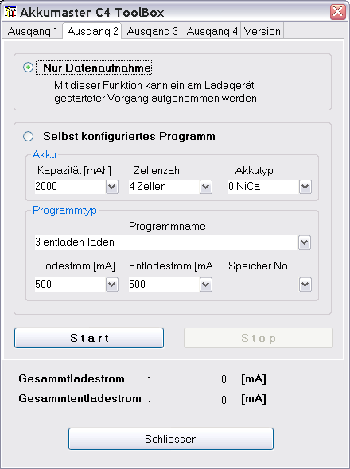
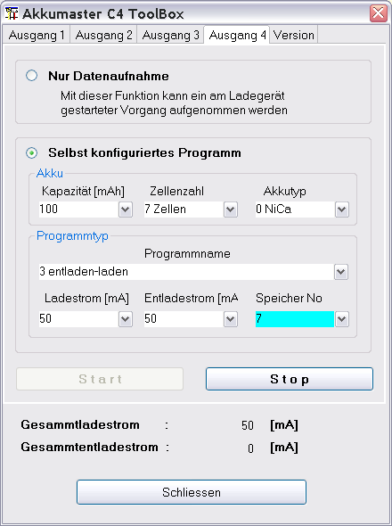

Der AkkuMaster-C4-Gerätedialog dient zum Einstellen und
Auslesen von Lade-bzw. Entladevorgängen. Es können alle vier
Ausgänge einzeln konfiguriert und bedient werden. Eine
Konfiguration, die das Gerät überlastet, ist nicht möglich.
Der aus den anwendungsspezifischen Einstellungen resultierende
Gesamtstrom wird jeweils angezeigt.
Hinweis : Ist ein
Auslesevorgang aktiv, kann der Dialog nicht geschlossen werden.
Es wird ein entsprechender Hinweis in der Statuszeile ausgegeben.
Da die Anzeige für alle aktiven Ausgänge laufend aktualisiert
wird, ist eine modales Dialogverhalten nicht ratsam. Sonst ist ein
Umschalten zwischen den Anzeigen der view Kanäle nicht möglich.
Viele Felder sind mit Hilfetexten hinterlegt und sollten diese Beschreibung für den weiteren Gebrauch weitestgehend überflüssig machen. Die Texte werden durch den darüber gehaltenen Mauszeiger sichtbar.
Nachdem die serielle Schnittstelle über den Geräteauswahldialog eingestellt ist und der Gerätedialog aufgerufen ist, wird der serielle Port im Hintergrund geöffnet und die Versionsinformation aktualisiert. Das kann zu einem Kommunikationsfehler führen, wenn der konfigurierte Port nicht geöffnet werden kann oder das Gerät ausgeschaltet ist. Ein Dialog mit der aktuellsten EPROM Version des Herstellers ist im Bild 1 zu sehen.

Nach der Anwahl eines Ausgangstabulators sind alle nicht benötigten Knöpfe inaktiv geschaltet. Es bleiben als einzige Auswahlmöglichkeit
Selbst konfiguriertes Programm
So ein Zustand ist im Bild 2 zu sehen.

Wenn wie gewohnt am Gerät der Ladevorgang gestartet wird, wird durch Auswahl von "Nur Datenaufnahme" die Anzeige im unteren Bereich mit den aktuell im Gerät eingestellten Werten aktualisiert. Außerdem wird der "Start"-Knopf aktiviert, um eine Datenaufnahme zu beginnen (Bild 3).

Wird der "Start"-Kopf gedrückt, aktualisiert sich die grafische Anzeige zyklisch mit den gemessenen Werten. Der "Stop"-Kopf wird aktiviert, um die Datenaufnahme gegebenenfalls abzubrechen.
Datensätze werden automatisch beim Wechsel des Programms angelegt, entladen -> laden.
Die Datenaufnahme stoppt automatisch, wenn das Gerät den Lade- bzw. Entladevorgang als beendet erklärt.
Hinweis: Ein stoppen der Datenaufnahme stoppt auch, aus Sicherheitsgründen, das laufende Programm im Gerät!
Wird "Selbst konfiguriertes Programm" angewählt,
aktualisiert sich die Anzeige mit den aktuell im Gerät
eingestellten Werten.
Nun kann man nach eigenen Vorgaben die
Werte über den Dialog verändern.
Da ein Programm, das
im Gerät ablaufen soll, im EPROM verfügbar sein muss, wird
das eingestellte Programm in die eingestellte Speicherstelle
geschrieben.
Hinweis : Leider ist es nicht möglich, über die Kommunikationsschnittstelle eine Speicherstelle auszuwählen und die dazugehörigen Werte auszulesen. Ich bevorzuge deshalb den Weg, das Programm am Gerät selbst einzustellen und über "Nur Datenaufnahme" die auflaufenden Daten aufzunehmen.
Wählt man nun eine abweichende Speicherstelle aus, wird zur
Verdeutlichung der Änderung die Hintergrundfarbe für dieses
Feld umgeschaltet.
Betätigt man nun den "Start"-Knopf wird das
Programm in die gewählte Speicherstelle geschrieben und das
Programm im Gerät gestartet. So ist es im nachfolgenden Bild
zusehen.

Das Schließen des Dialoges ist nur möglich, wenn alle Datenaufnahmen beendet sind. Dabei wird dann automatisch auch der serielle Port geschlossen.